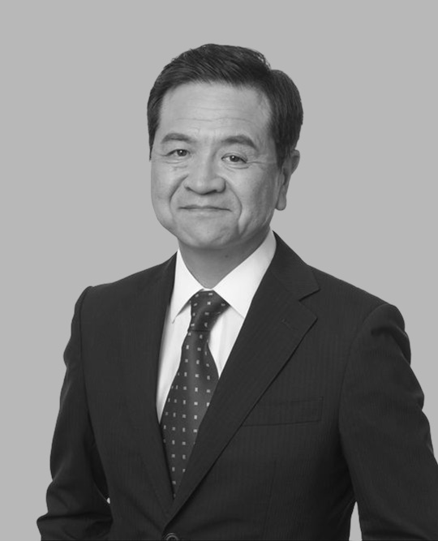

Kokusai Business
Kokusai BusinessAdvisory
About
Our team
KBA brings together Australian and Japanese leaders based in both Australia and Japan with decades of experience and relationships across the businesses, boards and institutions that shape the Australia–Japan relationship.
Each Principal brings their own experience, judgement and perspective, contributing to an advisory firm shaped by its people rather than a standard consulting model.
KBA’s Principals
-
 Trent AlstonReal estate, funds management & capital partnerships
Trent AlstonReal estate, funds management & capital partnerships
-
 Professor Jenny CorbettJapanese economy & financial policy
Professor Jenny CorbettJapanese economy & financial policy
-

Yoshiyuki HanasawaEnergy, power & heavy engineering -
 Yasuyuki OtsuCapital markets, M&A & governance
Yasuyuki OtsuCapital markets, M&A & governance
-
 Manuel PanagiotopoulosAustralia–Japan economic relations
Manuel PanagiotopoulosAustralia–Japan economic relations
- Bob Seidler AMLaw, governance & bilateral relations
-
 Arlene Tansey OAMBoards, banking & governance
Arlene Tansey OAMBoards, banking & governance
- Work with KBASpeak with KBA’s Principals about the decisions facing your organisation.Speak with KBA
What the Principals bring
Decades shaping Australia-Japan business
KBA’s Principals bring decades of experience and relationships in managing or advising major businesses involved in the bilateral relationship, including establishing and leading the Australia-Japan Roundtable through more than 200 events over 25 years. That work has built relationships across the business and institutional communities of both countries.
Experience from inside the decision
KBA’s advice draws on the leadership roles its Principals have held in leading or advising Australian and Japanese businesses operating internationally.
Different perspectives, brought together
Careers and board roles at major international institutions sit alongside backgrounds in investment, economics, law and government, giving KBA a multidisciplinary view.
Talk to KBA before you commit.
Speak with KBA’s Principals to discuss your strategic objectives.
Speak with KBA